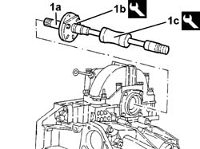
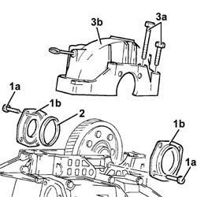
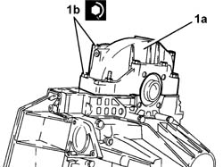
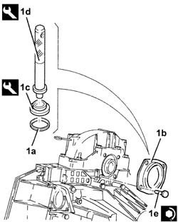
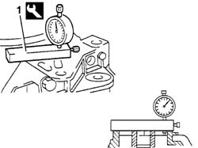
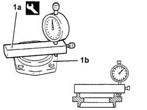
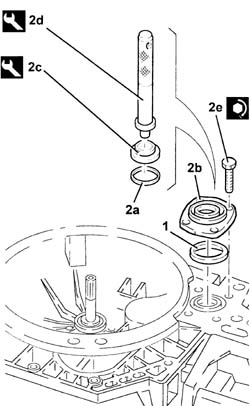

2110D14 Differential internal casing SUPPORT - R.R. with gearbox removed
- Path
- Procedures > 21 GEARBOX > 2110 MANUAL GEARBOX AND DIFFERENTIAL > 2110D MANUAL GEARBOX DIFFERENTIAL > 2110D14 Differential internal casing SUPPORT - R.R. with gearbox removed
- Kind
- repair procedure (removal / refitting; the operation number is the code)
- Applies to
- engines: 2.0 TB, 2.4 20V, 2.4 JTD 10V, 2.4 JTD 20V; all production periods
- Interactive page
- https://sloeber94.github.io/elrnDB-lThss/en/#/495388
Applies to: engines: 2.0 TB, 2.4 20V, 2.4 JTD 10V, 2.4 JTD 20V; all production periods
 Removing
Removing
 Refitting
Refitting1. Remove the left differential internal driveshaft (1a) using tools (1b) and (1c).
 | Description | Code | Function |
|---|---|---|---|
1b | Flange | 1.847.017.004 | Extracting left differential internal driveshaft |
| Description | Code | Function |
|---|---|---|---|
1c | Mallet | 1.840.206.001 | Extracting left differential internal driveshaft |

Applies to: engines: 2.0 TB, 2.4 20V, 2.4 JTD 10V, 2.4 JTD 20V; all production periods
1. Undo the bolts (1a) and remove the flanges on the differential (1b) complete with seals.
2. Remove the scraper ring.
3. Remove the bolts (3a) and remove the differential internal housing support (3b).

Applies to: engines: 2.0 TB, 2.4 20V, 2.4 JTD 10V, 2.4 JTD 20V; all production periods
Refitting
Removing- Apply the recommended sealant to the entire surface matched with the differential internal housing support.
 | Description | Qty. | Component | Type | Classification |
|---|---|---|---|---|---|
. | Loctite 510 | - | DIFF. SUPPORT PLATES MANUAL GEARBOX | Sealant | - |
1a. Fit the differential internal housing support (1a) and fastening it by tightening the bolts (1b) to the recommended torque.
 | Value - daNm | Fastening | Component | Ø |
|---|---|---|---|---|
1b | 4.6 - 6.6 | Bolt | DIFF. SUPPORT PLATES MANUAL GEARBOX | M10 |
| Value - daNm | Fastening | Component | Ø |
|---|---|---|---|---|
1b | 2.3 - 3.3 | Bolt | DIFF. SUPPORT PLATES MANUAL GEARBOX | M8 |

Applies to: engines: 2.0 TB, 2.4 20V, 2.4 JTD 10V, 2.4 JTD 20V; all production periods
1. Fit a new seal (1a) on the flange (1b) using tools (1c) and (1d) and secure it to the gearbox side differential using the bolts (1e).
| Description | Code | Function |
|---|---|---|---|
1c | Fitting tool | 1.870.597.000 | Fitting seal |
| Description | Code | Function |
|---|---|---|---|
1d | Grips | 1.870.007.000 | Fitting seal |
| Value - daNm | Fastening | Component | Ø |
|---|---|---|---|---|
1e | 2.3 - 3.3 | Bolt | DIFF. SUPPORT PLATES MANUAL GEARBOX | M8 |

Applies to: engines: 2.0 TB, 2.4 20V, 2.4 JTD 10V, 2.4 JTD 20V; all production periods
- Using a suitable drift, move the engine side tapered bearing inner/outer race closer.
1. Position the tool, complete with dial gauge, on the surface of the engine side differential and zero the dial gauge with a pre-loading of 1 mm.
| Description | Code | Function |
|---|---|---|---|
1 | Support | 1.895.655.000 | Determining thickness of differential bearing scraper rings |

Applies to: engines: 2.0 TB, 2.4 20V, 2.4 JTD 10V, 2.4 JTD 20V; all production periods
1. Position the tool (1a), complete with dial gauge, on the engine side differential flange (1b) and measure the difference.
| Description | Code | Function |
|---|---|---|---|
1a | Support | 1.895.655.000 | Determining thickness of differential bearing scraper rings |

Applies to: engines: 2.0 TB, 2.4 20V, 2.4 JTD 10V, 2.4 JTD 20V; all production periods
- Calculate the size of the scraper ring for the differential bearing pre-loading by adding 0.12 mm to the difference measured.
1. Place the scraper ring or rings of exactly the size or the next largest size to that calculated for the differential bearing pre-loading in the housing.
2. Fit a new seal (2a) on the flange (2b) using tools (2c) and (2d) and secure it to the gearbox side differential using the bolts (2e).
| Description | Code | Function |
|---|---|---|---|
2c | Fitting tool | 1.870.597.000 | Fitting seal |
| Description | Code | Function |
|---|---|---|---|
2d | Grips | 1.870.007.000 | Fitting seal |
| Value - daNm | Fastening | Component | Ø |
|---|---|---|---|---|
2e | 2.3 - 3.3 | Bolt | DIFF. SUPPORT PLATES MANUAL GEARBOX | M8 |

Applies to: engines: 2.0 TB, 2.4 20V, 2.4 JTD 10V, 2.4 JTD 20V; all production periods
- Fit the left inner driveshaft.